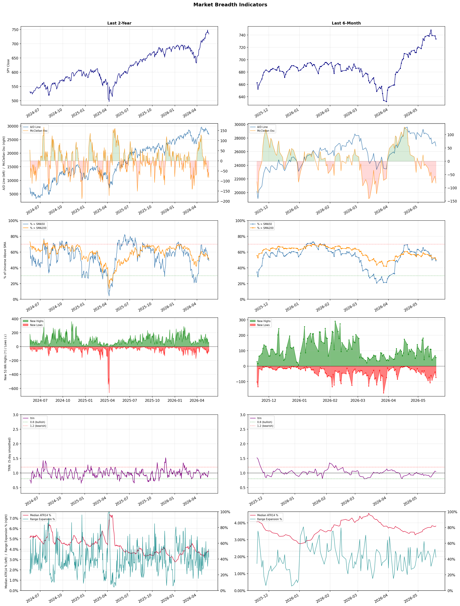

A daily research map of market breadth, industry rotation, and technical setups
| Item | Read |
|---|---|
| Regime downgraded | Selective Risk-On → Neutral |
| Regime | Neutral |
| Risk posture | Cautious |
| Indices | QQQ 701.53 (-0.6% today) |
| Universe | 1,708 stocks tracked · 55 new 52-week highs · 30 active swing setups |
| Breadth | only 49.0% of tracked stocks are above SMA50, new lows exceed new highs (73 vs 55), McClellan oscillator (breadth momentum) is negative at -82.5 |
| Leadership | Semiconductors, Oil & Gas Drilling, and Oil & Gas Equipment & Services |
| Weakest groups | Furnishings, Fixtures & Appliances, Specialty Retail, and Packaged Foods |
Use this report to prioritize research and chart review; validate entries, stops, liquidity, earnings, and risk before acting.
| Item | Read |
|---|---|
| Primary read | Neutral regime with Cautious risk posture. |
| Research queue | MXL, INTC, HIMX, AMD, MU |
| Leadership focus | Semiconductors, Oil & Gas Drilling, and Oil & Gas Equipment & Services |
| Caution list | Furnishings, Fixtures & Appliances, Specialty Retail, and Packaged Foods |
| Review prompt | Check extension risk, chart location, fundamentals, valuation, and earnings before using any research row. |
| Item | Read |
|---|---|
| Primary read | 4 active risk warnings; use screen output as watchlist input only. |
| Bullish screens | HAL, KGS, WTTR, CMBT, ENB |
| Bearish screens | HAYW, TIGR, DJT, MOS, APTV |
| Alerts / levels | Automated trigger, stop, ATR, liquidity, reward/risk, and event-risk levels are pending future enrichment. |
| Review prompt | Open the linked chart, define trigger and invalidation, then check liquidity and event risk independently. |
Risk Posture: Cautious — screen backdrop is selective; prioritize research in top-ranked groups
Metric context: McClellan below -50 = elevated selling pressure; below -100 = washout territory. Range Expansion = share of stocks with daily range above their 20-day average. Signal Density = share of tracked names appearing in signal screens.
| Breadth Date | % > SMA50 | % > SMA200 | New Highs | New Lows | McClellan | Median Range | Avg Range | Median ATR14 | Range Expansion | Signal Density |
|---|---|---|---|---|---|---|---|---|---|---|
| 2026-05-19 | 49.0% | 50.7% | 55 | 73 | -82.5 | 3.1% | 3.6% | 3.8% | 42.2% | 13.3% |

Regime downgraded: Selective Risk-On → Neutral
Prior comparison date: May 18, 2026
| Metric | Prior | Current | Change |
|---|---|---|---|
| Regime | Selective Risk-On | Neutral | changed |
| Risk Posture | Cautious | Cautious | unchanged |
| % > SMA50 | 52.6% | 49.0% | -3.6 pts |
| % > SMA200 | 52.8% | 50.7% | -2.1 pts |
| New Highs | 68 | 55 | -13 |
| New Lows | 37 | 73 | -36 |
Top-10 industries entering: Semiconductor Equipment & Materials. Top-10 industries leaving: Electrical Equipment & Parts. New multi-signal long setups: BJ, CMBT, ENB, FROG, JAZZ, KGS, MGA, OHI, TFSL. New multi-signal short setups: HAYW.
| Status | Tickers | Read |
|---|---|---|
| Added | AEHR, AMKR, ASTS, BJ, CMBT, ENB, FROG, HAYW | New technical screen matches vs prior report. |
| Removed | AFL, AIG, BMRN, CLS, CRWD, CVE, GNW, INTR | No longer present in today's technical screen matches. |
| Still Active | ALL, APTV, COST, DJT, FTNT, GT, HAL, MOS | Appeared in both current and prior reports. |
| Promoted | ALL | Model Screen Score improved by at least 15 points. |
| Downgraded | none | Model Screen Score declined by at least 15 points. |
| Direction | Industry | Prior Rank | Current Rank | Days | Rank Change |
|---|---|---|---|---|---|
| Rose | Solar | 97 | 19 | 28 | +78 |
| Rose | REIT - Office | 84 | 24 | 42 | +60 |
| Rose | Software - Infrastructure | 78 | 18 | 35 | +60 |
| Rose | Oil & Gas Midstream | 63 | 7 | 28 | +56 |
| Rose | Internet Content & Information | 94 | 39 | 42 | +55 |
| Direction | Industry | Prior Rank | Current Rank | Days | Rank Change |
|---|---|---|---|---|---|
| Fell | Apparel Manufacturing | 8 | 88 | 28 | -80 |
| Fell | Apparel Retail | 22 | 95 | 28 | -73 |
| Fell | Uranium | 27 | 93 | 7 | -66 |
| Fell | Utilities - Independent Power Producers | 36 | 92 | 14 | -56 |
| Fell | Specialty Industrial Machinery | 15 | 70 | 35 | -55 |
| Industry | Rank | ETF | 7d | 14d | 28d | 42d | Chg 42d | Size | 20D | 60D | Composite | Active Setups |
|---|---|---|---|---|---|---|---|---|---|---|---|---|
| Semiconductors | 1 | SOXX | 1 | 1 | 1 | 19 | +18 | 36 | 27.3% | 69.5% | 0.980 | 3 |
| Oil & Gas Drilling | 2 | XES | 7 | 29 | 43 | 2 | 0 | 6 | 15.6% | 30.4% | 0.955 | 0 |
| Oil & Gas Equipment & Services | 3 | XES | 5 | 5 | 14 | 5 | +2 | 23 | 11.0% | 24.4% | 0.926 | 2 |
| Healthcare Plans | 4 | IHF | 4 | 12 | 44 | 48 | +44 | 11 | 26.2% | 34.6% | 0.924 | 1 |
| Communication Equipment | 5 | IYZ | 6 | 6 | 4 | 7 | +2 | 17 | 5.9% | 44.2% | 0.896 | 2 |
| Computer Hardware | 6 | XLK | 2 | 3 | 7 | 35 | +29 | 14 | 6.7% | 32.0% | 0.854 | 1 |
| Oil & Gas Midstream | 7 | AMLP | 14 | 23 | 63 | 9 | +2 | 30 | 10.1% | 12.7% | 0.852 | 2 |
| Electronic Components | 8 | XLK | 8 | 4 | 3 | 14 | +6 | 9 | 6.7% | 31.4% | 0.850 | 1 |
| Oil & Gas Integrated | 9 | XLE | 26 | 32 | 38 | 1 | -8 | 12 | 6.9% | 20.9% | 0.833 | 2 |
| Semiconductor Equipment & Materials | 10 | SOXX | 3 | 2 | 2 | 8 | -2 | 18 | 2.1% | 38.9% | 0.828 | 2 |
Rank columns (7d–42d) show the industry's rank that many trading days ago — lower is stronger. Chg 42d = rank change vs 42 trading days ago — positive means the industry moved up. 20D and 60D are the mean stock return within the industry over that period. Active Setups: count of today's swing-trade candidates from this industry appearing across all signal screens.
| Industry | Rank | ETF | 7d | 14d | 28d | 42d | Chg 42d | Size | 20D | 60D | Composite | Active Setups |
|---|---|---|---|---|---|---|---|---|---|---|---|---|
| Furnishings, Fixtures & Appliances | 98 | N/A | 98 | 78 | 82 | 98 | 0 | 7 | -21.2% | -31.4% | 0.011 | 2 |
| Specialty Retail | 97 | XRT | 94 | 89 | 64 | 86 | -11 | 15 | -15.6% | -19.2% | 0.078 | 2 |
| Packaged Foods | 96 | XLP | 97 | 97 | 96 | 93 | -3 | 17 | -9.8% | -22.9% | 0.090 | 2 |
| Apparel Retail | 95 | XRT | 96 | 88 | 22 | 26 | -69 | 10 | -15.7% | -15.8% | 0.113 | 0 |
| Building Products & Equipment | 94 | XHB | 78 | 57 | 60 | 77 | -17 | 12 | -11.2% | -15.1% | 0.121 | 2 |
| Uranium | 93 | URA | 27 | 34 | 70 | 81 | -12 | 6 | -15.4% | -19.5% | 0.122 | 1 |
| Utilities - Independent Power Producers | 92 | XLU | 79 | 36 | 93 | 72 | -20 | 5 | -8.3% | -14.5% | 0.135 | 2 |
| Industrial Distribution | 91 | N/A | 83 | 69 | 41 | 47 | -44 | 6 | -13.9% | -13.5% | 0.135 | 2 |
| Residential Construction | 90 | ITB | 90 | 75 | 47 | 78 | -12 | 7 | -11.8% | -17.9% | 0.144 | 0 |
| Information Technology Services | 89 | XLK | 93 | 82 | 89 | 97 | +8 | 31 | -10.2% | -6.1% | 0.160 | 1 |
Rank columns (7d–42d) show the industry's rank that many trading days ago — lower is stronger. Chg 42d = rank change vs 42 trading days ago — positive means the industry moved up. 20D and 60D are the mean stock return within the industry over that period. Active Setups: count of today's swing-trade candidates from this industry appearing across all signal screens.
These are research candidates from top-ranked stocks, capped at five names per industry to avoid over-concentration. Returns shown (60D, 120D, 250D) are historical — they reflect where prices have already moved, not forward expectations. Extension Risk flags names that may require extra patience or a better entry point. They are not buy signals.
Chart: TV = TradingView chart (opens in browser); PDF = local chart file (if downloaded).
| Ticker | Name | Industry | Industry Rank | Market Cap | 60D Hist | 120D Hist | 250D Hist | Extension Risk | Research Reason | Chart |
|---|---|---|---|---|---|---|---|---|---|---|
| MXL | MaxLinear | Semiconductors | 1 | 1.4B | 428.8% | 541.4% | 685.9% | Very extended | Top-ranked in industry; very extended | TV · PDF |
| INTC | Intel | Semiconductors | 1 | 216.8B | 154.0% | 209.6% | 420.9% | Very extended | Top-ranked in industry; very extended | TV · PDF |
| HIMX | Himax Technologies | Semiconductors | 1 | 1.3B | 153.5% | 162.4% | 128.6% | Very extended | Top-ranked in industry; very extended | TV · PDF |
| AMD | Advanced Micro Devices | Semiconductors | 1 | 313.7B | 110.6% | 92.5% | 264.8% | Very extended | Top-ranked in industry; very extended | TV · PDF |
| MU | Micron Technology | Semiconductors | 1 | 416.8B | 66.0% | 212.0% | 612.3% | Extended | Top-ranked in industry; extended | TV · PDF |
| PTEN | Patterson-UTI Energy | Oil & Gas Drilling | 2 | 3.4B | 52.3% | 127.7% | 118.0% | Extended | Top-ranked in industry; extended | TV · PDF |
| NE | Noble | Oil & Gas Drilling | 2 | 7.0B | 19.9% | 79.8% | 124.6% | Constructive | Top-ranked in industry | TV · PDF |
| RIG | Transocean | Oil & Gas Drilling | 2 | 6.5B | 16.6% | 85.3% | 192.2% | Constructive | Top-ranked in industry | TV · PDF |
| HP | Helmerich & Payne | Oil & Gas Drilling | 2 | 3.4B | 16.6% | 53.1% | 154.2% | Constructive | Top-ranked in industry | TV · PDF |
| BORR | Borr Drilling | Oil & Gas Drilling | 2 | 1.7B | 6.2% | 94.9% | 264.5% | Constructive | Top-ranked in industry | TV · PDF |
| AESI | Atlas Energy Solutions | Oil & Gas Equipment & Services | 3 | 1.5B | 74.5% | 137.0% | 46.2% | Extended | Top-ranked in industry; extended | TV · PDF |
| NEXT | NextDecade | Oil & Gas Equipment & Services | 3 | 1.5B | 65.5% | 59.9% | 21.5% | Extended | Top-ranked in industry; extended | TV · PDF |
| ACDC | ProFrac Holding | Oil & Gas Equipment & Services | 3 | 976.7M | 57.3% | 152.0% | 23.9% | Extended | Top-ranked in industry; extended | TV · PDF |
| WTTR | Select Water Solutions | Oil & Gas Equipment & Services | 3 | 1.7B | 56.7% | 100.8% | 138.9% | Extended | Top-ranked in industry; extended | TV · PDF |
| KGS | Kodiak Gas Services | Oil & Gas Equipment & Services | 3 | 4.7B | 50.9% | 124.9% | 114.2% | Extended | Top-ranked in industry; extended | TV · PDF |
| OSCR | Oscar Health | Healthcare Plans | 4 | 4.1B | 96.9% | 48.7% | 48.9% | Extended | Top-ranked in industry; extended | TV · PDF |
| CLOV | Clover Health | Healthcare Plans | 4 | 1.0B | 77.7% | 45.8% | -5.1% | Extended | Top-ranked in industry; extended | TV · PDF |
| HUM | Humana | Healthcare Plans | 4 | 21.6B | 71.4% | 35.5% | 21.6% | Extended | Top-ranked in industry; extended | TV · PDF |
| CNC | Centene | Healthcare Plans | 4 | 21.5B | 36.5% | 55.0% | -4.5% | Constructive | Top-ranked in industry | TV · PDF |
| PGNY | Progyny | Healthcare Plans | 4 | 1.5B | 15.4% | -6.6% | 12.5% | Constructive | Top-ranked in industry | TV · PDF |
These are technical screen matches from existing signal files. They are not trade recommendations. Trigger, stop, ATR, liquidity, reward/risk, and event risk still require separate validation until those inputs are available.
Model Screen Score is weighted by signal count, industry rank, freshness, and setup type. It is not a probability of profit, expected return, or suitability rating. Industry cap: max 3 candidates per industry.
Signal glossary: Momentum Pullback = stock in an uptrend that has pulled back 10–30% and shows re-entry conditions. MA Compression = short- and long-term moving averages converging, often preceding a directional move. Three-Day Up/Down = three consecutive closes in the same direction. New 52Wk High/Low = price reached a new annual extreme.
Chart: TV = TradingView chart (opens in browser); PDF = local chart file (if downloaded).
| Ticker | Industry | Setups | Close | Industry Rank | Signal Count | Model Screen Score | Reason | Chart |
|---|---|---|---|---|---|---|---|---|
| ALL | Insurance - Property & Casualty | MA Compression; New 52Wk High; Three-Day Up | 224.58 | 37 | 3 | 90 | Multi-signal; new-high strength | TV · PDF |
| TXNM | Utilities - Regulated Electric | MA Compression; New 52Wk High; Three-Day Up | 59.45 | 57 | 3 | 85 | Multi-signal; new-high strength | TV · PDF |
| HAL | Oil & Gas Equipment & Services | New 52Wk High; Three-Day Up | 42.98 | 3 | 2 | 100 | Multi-signal; top industry breakout | TV · PDF |
| KGS | Oil & Gas Equipment & Services | New 52Wk High; Three-Day Up | 75.89 | 3 | 2 | 100 | Multi-signal; top industry breakout | TV · PDF |
| WTTR | Oil & Gas Equipment & Services | New 52Wk High; Three-Day Up | 20.04 | 3 | 2 | 100 | Multi-signal; top industry breakout | TV · PDF |
| CMBT | Oil & Gas Midstream | New 52Wk High; Three-Day Up | 16.61 | 7 | 2 | 93 | Multi-signal; top industry breakout | TV · PDF |
| ENB | Oil & Gas Midstream | New 52Wk High; Three-Day Up | 56.79 | 7 | 2 | 93 | Multi-signal; top industry breakout | TV · PDF |
| OHI | REIT - Healthcare Facilities | New 52Wk High; Three-Day Up | 48.74 | 11 | 2 | 85 | Multi-signal; new-high strength | TV · PDF |
| FTNT | Software - Infrastructure | New 52Wk High; Three-Day Up | 127.64 | 18 | 2 | 77 | Multi-signal; new-high strength | TV · PDF |
| FROG | Software - Application | New 52Wk High; Three-Day Up | 70.63 | 43 | 2 | 65 | Multi-signal; new-high strength | TV · PDF |
| JAZZ | Biotechnology | New 52Wk High; Three-Day Up | 237.45 | 50 | 2 | 65 | Multi-signal; new-high strength | TV · PDF |
| COST | Discount Stores | New 52Wk High; Three-Day Up | 1094.32 | 51 | 2 | 65 | Multi-signal; new-high strength | TV · PDF |
| BJ | Discount Stores | MA Compression; Three-Day Up | 97.66 | 51 | 2 | 60 | Multi-signal; compression setup | TV · PDF |
| TFSL | Banks - Regional | New 52Wk High; Three-Day Up | 15.44 | 65 | 2 | 55 | Multi-signal; new-high strength | TV · PDF |
| MGA | Auto Parts | Momentum Pullback | 59.42 | 63 | 2 | 40 | Multi-signal; pullback setup | TV · PDF |
| MU | Semiconductors | Momentum Pullback | 698.74 | 1 | 1 | 65 | Single-signal; top industry pullback | TV · PDF |
| POET | Semiconductors | Momentum Pullback | 13.07 | 1 | 1 | 65 | Single-signal; top industry pullback | TV · PDF |
| RMBS | Semiconductors | Momentum Pullback | 122.03 | 1 | 1 | 65 | Single-signal; top industry pullback | TV · PDF |
| ASTS | Communication Equipment | Momentum Pullback | 88.10 | 5 | 1 | 58 | Single-signal; top industry pullback | TV · PDF |
| AEHR | Semiconductor Equipment & Materials | Momentum Pullback | 81.14 | 10 | 1 | 50 | Single-signal; top industry pullback | TV · PDF |
| AMKR | Semiconductor Equipment & Materials | Momentum Pullback | 65.54 | 10 | 1 | 50 | Single-signal; top industry pullback | TV · PDF |
| RLJ | REIT - Hotel & Motel | New 52Wk High | 9.15 | 12 | 1 | 50 | Single-signal; new-high strength | TV · PDF |
| PGNY | Healthcare Plans | Three-Day Up | 24.60 | 4 | 1 | 48 | Single-signal; top industry setup | TV · PDF |
Bearish setups — stocks making new lows or showing persistent downside patterns. Validate carefully before acting.
| Ticker | Industry | Setups | Close | Industry Rank | Signal Count | Model Screen Score | Reason | Chart |
|---|---|---|---|---|---|---|---|---|
| HAYW | Electrical Equipment & Parts | New 52Wk Low; Three-Day Down | 13.08 | 16 | 2 | 47 | Multi-signal; new-low weakness | TV · PDF |
| TIGR | Capital Markets | New 52Wk Low; Three-Day Down | 5.82 | 20 | 2 | 47 | Multi-signal; new-low weakness | TV · PDF |
| DJT | Internet Content & Information | New 52Wk Low; Three-Day Down | 8.00 | 39 | 2 | 40 | Multi-signal; new-low weakness | TV · PDF |
| MOS | Agricultural Inputs | New 52Wk Low; Three-Day Down | 21.40 | 53 | 2 | 35 | Multi-signal; new-low weakness | TV · PDF |
| APTV | Auto Parts | New 52Wk Low; Three-Day Down | 52.57 | 63 | 2 | 25 | Multi-signal; new-low weakness | TV · PDF |
| GT | Auto Parts | New 52Wk Low; Three-Day Down | 5.60 | 63 | 2 | 25 | Multi-signal; new-low weakness | TV · PDF |
| NCLH | Travel Services | New 52Wk Low; Three-Day Down | 14.79 | 69 | 2 | 25 | Multi-signal; new-low weakness | TV · PDF |
How To Use This Report
| Use | Purpose |
|---|---|
| Market map | Start with breadth, regime, risk warnings, and what changed since the prior report. |
| Industry scan | Use leading, deteriorating, rising, and declining industries to focus research. |
| Research queue | Treat long-term candidates as names for deeper fundamental, valuation, and chart review. |
| Technical review | Treat bullish and bearish screen matches as watchlist inputs that require independent trigger, stop, liquidity, and event-risk checks. |
| Source follow-up | Use chart links and source files to verify raw inputs before relying on any row. |
What This Report Is Not
| Not | Meaning |
|---|---|
| Investment advice | The report does not evaluate personal objectives, risk tolerance, tax situation, account type, or suitability. |
| Buy/sell recommendation | Named tickers are research candidates or screen matches, not recommendations to transact. |
| Price target | The report does not provide fair value estimates, targets, or expected returns. |
| Trade plan | Trigger, stop, sizing, reward/risk, liquidity, and event-risk review remain separate user work. |
| Performance claim | Model Screen Score is not validated historical performance or a forecast of future results. |
| Item | Note |
|---|---|
| Version | Daily Report Methodology v1 |
| Model Screen Score | Screen-fit rank based on signal count, industry rank, freshness, and setup type. |
| Not predictive proof | The score is not expected return, probability of profit, historical validation, or suitability analysis. |
| Industry ranks | Composite industry ranks use existing daily ranking outputs and historical rank columns when available. |
| Research candidates | Long-term rows are research candidates from ranked stocks and leading industries, with historical returns labeled as historical only. |
| Technical matches | Bullish and bearish rows are screen matches requiring independent chart, trigger, stop, liquidity, and event-risk review. |
| Source | Status | Rows | Path |
|---|---|---|---|
| Market breadth | present | 1254 | breadth_20260519.csv |
| Industry composite rankings | present | 98 | all_industry_composite_20260519.csv |
| Top ranked stocks | present | 176 | top_ranked_composite_20260519.csv |
| All ranked stocks | present | 1708 | all_stocks_composite_sorted_20260519.csv |
| Top momentum pullbacks | present | 1804 | top_momentum_pullbacks_20260519.csv |
| MA compression | present | 1804 | ma_compression_stocks_20260519.csv |
| Three-day up/down | present | 266 | three_day_up_down_stocks_20260519.csv |
| New 52-week members | present | 128 | breadth_new_52wk_members_20260519.csv |
This report is generated from automated technical screens and is for informational and research purposes only. It is not investment advice, a solicitation, or a recommendation to buy or sell any security. Past performance is not indicative of future results. You are solely responsible for your own investment decisions. Consult a licensed financial advisor before acting on any information herein.